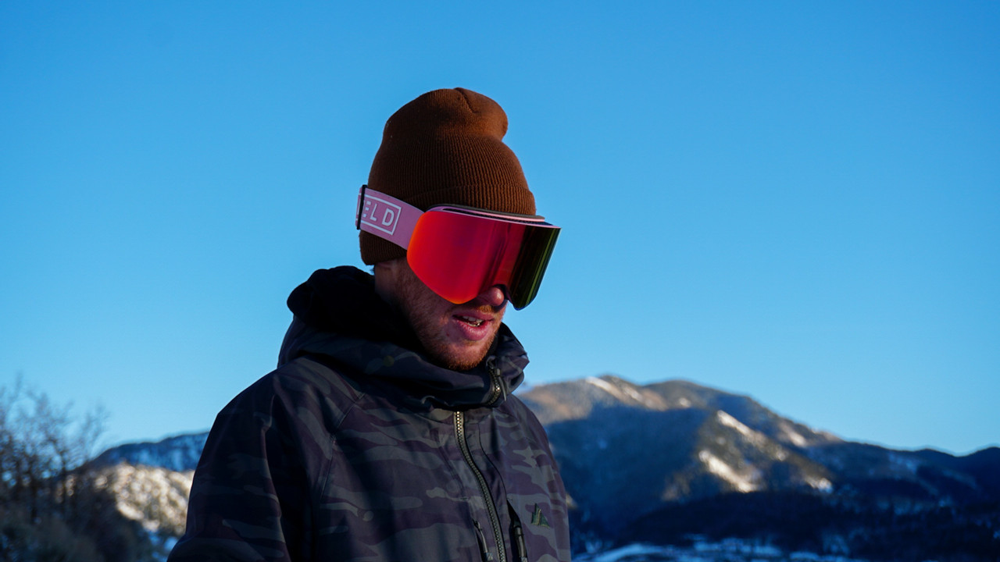
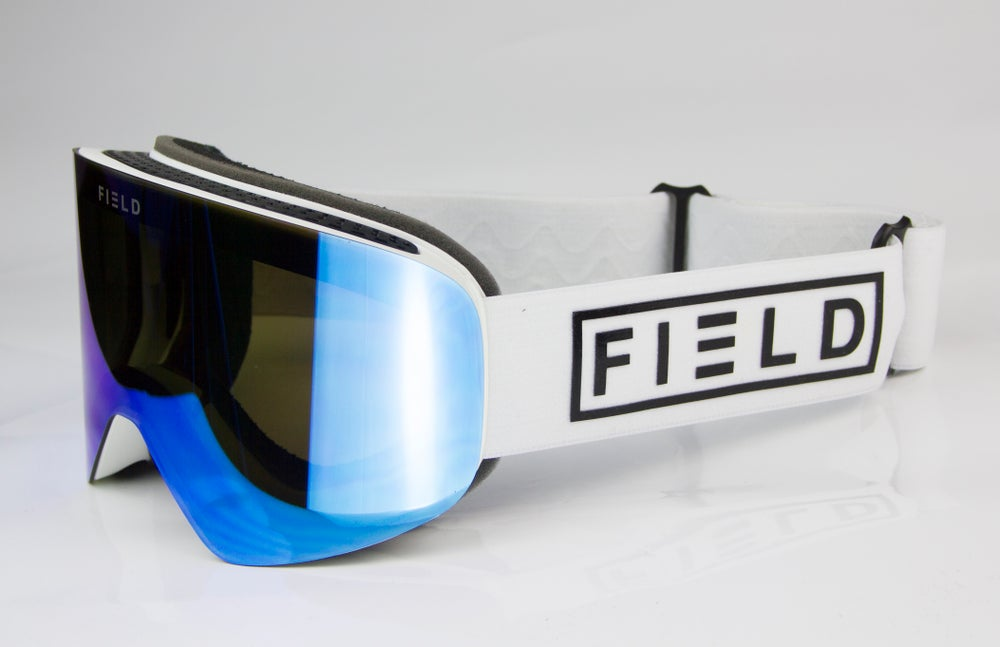
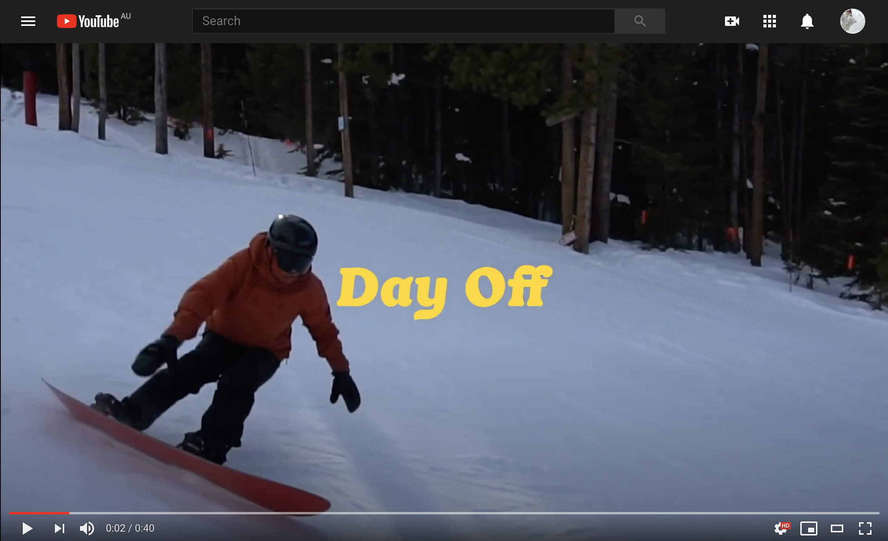

My passion for snowboard and surfing has
led me to a lot of experience in photography
and videography. Working with the Perisher
Media Team introduced me to some incredible
photographers and videographers who have
inspired me to shoot more photo and video
content.
My favourite subject to shoot is still sports,
although building my own brand has introduced
studio photography and portraits into my
repertoire.


